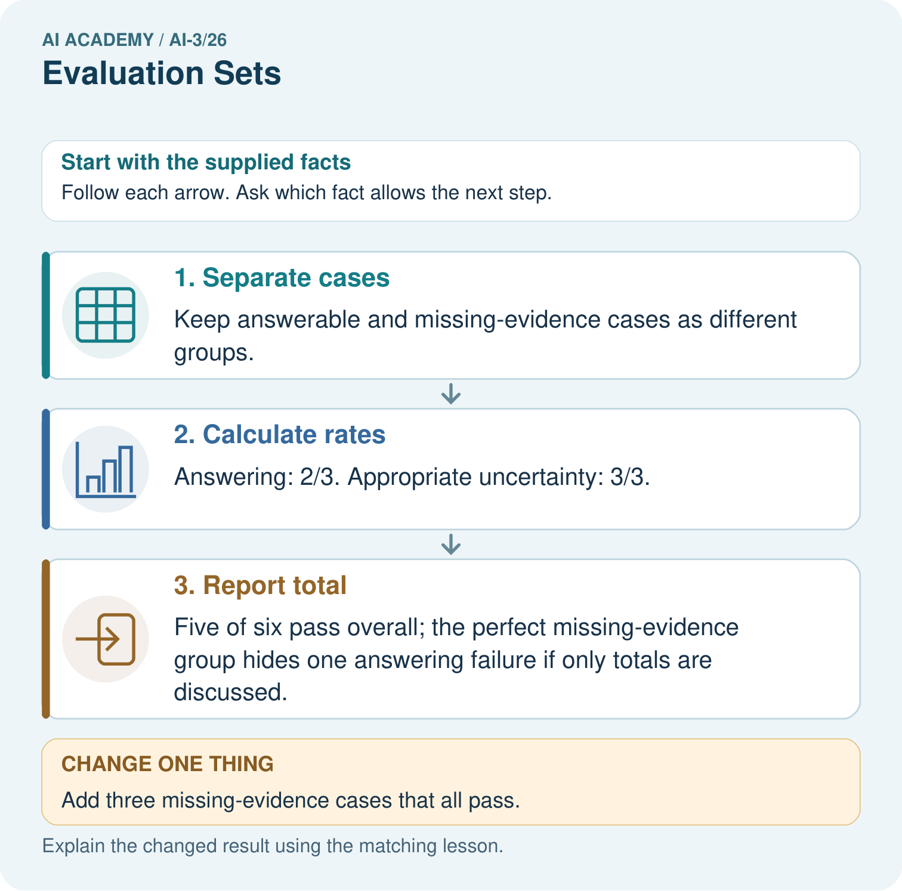
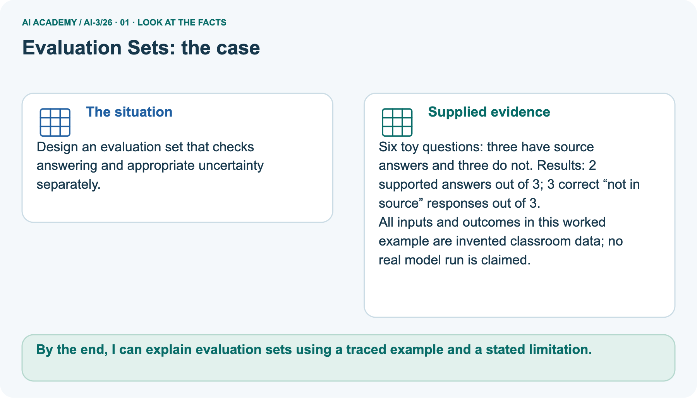
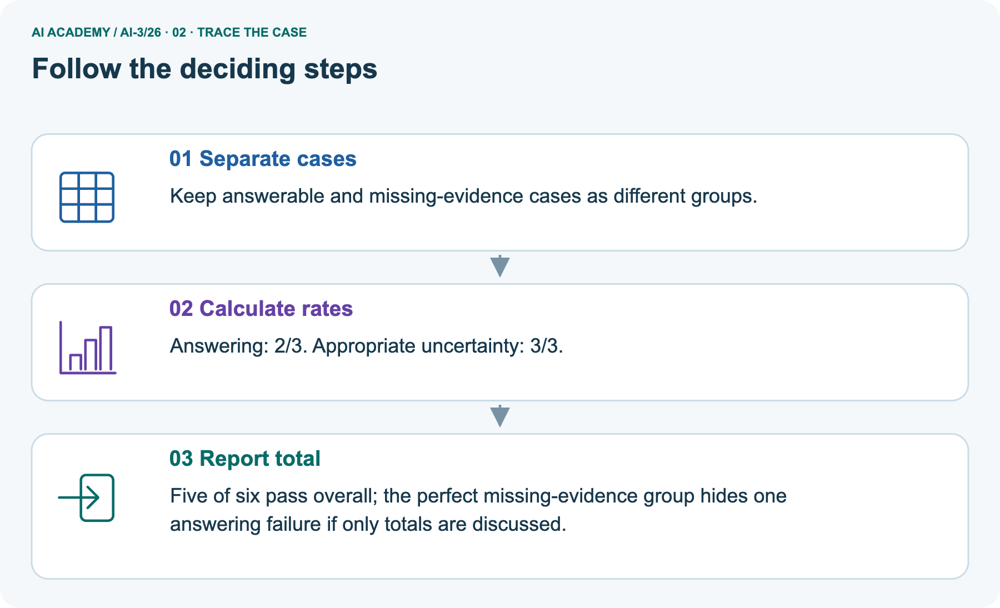
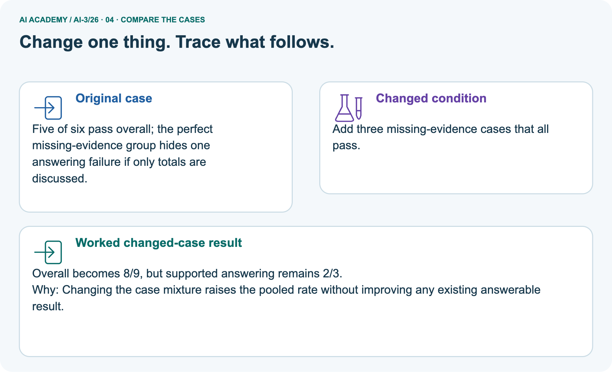
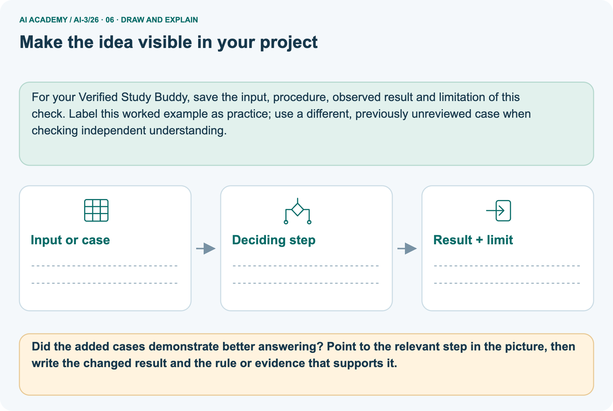

AI Academy · Level 3 · Grade 8 · Week 26 · Workbook
Evaluation Sets
Learn to understand, design, build, test and explain AI systems responsibly.
Project: Verified Study Buddy
Workbook · 1 of 26
Recall and choose your starting point
Record your starting explanation for Evaluation Sets before opening notes. Show any later correction separately.
Try the recall before opening notes. Then use a different colour or a labelled second line to correct your explanation.
Quality Rubrics
Without opening the old lesson, explain one key idea from Quality Rubrics. Give an example and a mistake that the idea helps you avoid.
Block to Python Bridge
Without opening the old lesson, explain one key idea from Block to Python Bridge. Give an example and a mistake that the idea helps you avoid.
Conversation State and Memory
Without opening the old lesson, explain one key idea from Conversation State and Memory. Give an example and a mistake that the idea helps you avoid.
Workbook · 2 of 26
Practise with fading help
Complete the supported Evaluation Sets trace and record the first step you can explain without help.
Use W2: Trace the worked case for System evaluation sets. Record the answer once; the lesson and workbook refer to the same attempt.
| Given inputs | Procedure I chose | Middle steps | Result and check |
|---|---|---|---|
Workbook · 3 of 26
Individual reasoning check
Check the proposed Evaluation Sets explanation against the supplied facts before discussing it.
Use the worked case for System evaluation sets. Proposed explanation: “The worked result establishes every future case”. Decide whether this explanation is supported.
Point to the step or supplied fact that decides; explain your repair if needed.
Workbook · 4 of 26
Independent transfer case
Write one first attempt at the reserved independent case before feedback. Repeated copies of that case refer to the same recorded attempt.
Independent case: Changed independent case
Approved notes: Robotics Tuesday Room2; Art Wednesday Room5. Requests: “Where does the club meet?” and “Who leads drama?” An unversioned added note says Robotics Room3. Design checks and safe responses.
Attempt this case before feedback. Record any help. Earlier examples below are further practice; a case already practised with feedback cannot establish fresh transfer.
Workbook · 5 of 26
Your learning target
Connect the Evaluation Sets target to a trace and a justified conclusion.
A test set contains ten easy questions with direct answers in the notes. Add three different kinds of cases that probe fallback behaviour and define expected outcomes.
Workbook · 6 of 26
Solve the given case
Solve the supplied Evaluation Sets case and show the deciding evidence.
Ten evaluation questions are easy definitions; none lacks a source.
What is untested?
Show your trace, calculation or evidence
Workbook · 7 of 26
Check a changed case
Apply the procedure to the changed case and record why the conclusion follows.
You improve a prompt after reading every test question. Can those questions still provide an untouched final evaluation? Propose a repair.
My independent answer and reason
Week 26 Test and reflect
Workbook · 8 of 26
Design a revealing test
Specify a changed input, expected result and observation separately.
Create a changed input, boundary case or missing-information case. Write the expected answer or safe response before testing.
| Test record | My evidence |
|---|---|
| Changed input or condition | |
| Expected answer or fallback | |
| Observed result | |
| Why the result occurred |
Workbook · 9 of 26
Project checkpoint
Justify what Evaluation Sets adds to Verified Study Buddy and keep the evidence.
Maintain a balanced eval set covering utility, grounding, format, privacy, and safety.
The project change and evidence I will keep
Workbook · 10 of 26
Self check
Judge explanation, evidence, transfer and limits separately; attach the work behind your judgement.
- I can explain the mechanism.
- I can show evidence.
- I can handle a changed case.
- I can name a limit.
Mark each as not yet, with help or independently, and attach supporting work.
Teacher review ____________________ Next step ____________________
Workbook · 11 of 26
Transfer practice from the original programme
Use this earlier case as transfer practice. A case already discussed with feedback is not fresh assessment evidence.
A test set contains ten easy questions with direct answers in the notes. Add three different kinds of cases that probe fallback behaviour and define expected outcomes.
Record support used: none, hint or teacher explanation.
Workbook · 12 of 26
W1 Explain the mechanism
Explain the mechanism. Apply the supplied Evaluation Sets facts and keep your reasoning.
Where to find the supplied example
Reference for this exercise: open this week’s student lesson, “Evaluation Sets”, at “See how it works” and “Follow a worked example”. Use the original worked values or code named in the question; the later pictorial case is a separate example. Keep this reference beside your workbook while practising.
Explain the weekly mechanism in your own words. Use the worked scenario to name its input, decision rule and output.
Workbook · 13 of 26
W2 Trace the worked case
Trace the worked case. Apply the supplied Evaluation Sets facts and keep your reasoning.
Ten cases include six answerable and four missing-evidence cases. System answers five answerable correctly and abstains appropriately on three missing cases. Show the intermediate steps and give the conclusion with its scope.
Workbook · 14 of 26
W3 Audit the limit
Audit the limit. Apply the supplied Evaluation Sets facts and keep your reasoning.
A report omits this qualification: Evaluation coverage limits the claim; prompts tuned on these cases need new reserved final cases.
Explain how omitting it could change a reader's interpretation, and write an accurate replacement.
Workbook · 15 of 26
W4 Apply a new case independently
Attempt before feedback. If this repeats the selected independent case, reuse that first attempt; otherwise keep a separate record. Apply a new case independently. Apply the supplied Evaluation Sets facts and keep your reasoning.
Twelve cases: eight answerable, four unanswerable. Correct answers six; appropriate abstentions two. Compute separate and combined pass rates.
Workbook · 16 of 26
W5 Design a revealing follow-up
Design a revealing follow-up. Apply the supplied Evaluation Sets facts and keep your reasoning.
Where to find the supplied example
Reference for this exercise: open this week’s student lesson, “Evaluation Sets”, at “See how it works” and “Follow a worked example”. Use the original worked values or code named in the question; the later pictorial case is a separate example. Keep this reference beside your workbook while practising.
For the worked scenario, propose one additional case that could reveal a failure, describe its expected outcome before running it, and explain what would need to remain fixed for a fair comparison.
Do not reuse W4 as a new final test after receiving feedback.
Workbook · 17 of 26
Ranking and retrieval evaluation — W1 Explain the mechanism
Use the supplied Evaluation Sets task to record your reasoning, evidence and next step.
Explain the weekly mechanism in your own words. Use the worked scenario to name its input, decision rule and output.
Workbook · 18 of 26
Ranking and retrieval evaluation — W2 Trace the worked case
Use the supplied Evaluation Sets task to record your reasoning, evidence and next step.
Relevant documents are A, C, E. Top three results A, B, C contain two relevant items. Show the intermediate steps and give the conclusion with its scope.
Workbook · 19 of 26
Ranking and retrieval evaluation — W3 Audit the limit
Use the supplied Evaluation Sets task to record your reasoning, evidence and next step.
A report omits this qualification: Known judgments may be incomplete; a score over one query does not establish coverage over all queries.
Explain how omitting it could change a reader's interpretation, and write an accurate replacement.
Workbook · 20 of 26
Ranking and retrieval evaluation — W4 Apply a new case independently
Use the supplied Evaluation Sets task to record your reasoning, evidence and next step.
Relevant set A, D, F, G; top three A, B, D. Compute precision and recall. Explain which omitted records affect recall.
Workbook · 21 of 26
Ranking and retrieval evaluation — W5 Design a revealing follow-up
Use the supplied Evaluation Sets task to record your reasoning, evidence and next step.
For the worked scenario, propose one additional case that could reveal a failure, describe its expected outcome before running it, and explain what would need to remain fixed for a fair comparison.
Do not reuse W4 as a new final test after receiving feedback.
Workbook · 22 of 26
Feedback, return check and learning record
Record the first repaired step and a different case to revisit after a delay.
| Evidence | My record |
|---|---|
| Worked alone / hint / model | |
| First step I repaired and why | |
| New case checked later; date and result | |
| What I can now explain without notes | |
| One remaining question |
Revisit this idea with your teacher after a delay. Familiarity is different from explaining and using it on a changed case.
Workbook · 23 of 26
Pictorial case practice: Evaluation Sets
Design an evaluation set that checks answering and appropriate uncertainty separately. Explain the labelled step before checking the changed condition.
Design an evaluation set that checks answering and appropriate uncertainty separately.
Six toy questions: three have source answers and three do not. Results: 2 supported answers out of 3; 3 correct “not in source” responses out of 3.
All inputs and outcomes in this worked example are invented classroom data; no real model run is claimed.

Did the added cases demonstrate better answering? Point to the relevant step in the picture, then write the changed result and the rule or evidence that supports it.
Record the help used
Support used: alone / hint / worked example. This record is practice evidence.
Project connection: For your Verified Study Buddy, save the input, procedure, observed result and limitation of this check.
Label this worked example as practice; use a different, previously unreviewed case when checking independent understanding.
Workbook · 24 of 26
Project portfolio milestone
Keep this week’s input, deciding step, result and limit together in the Verified Study Buddy record.
Project: Verified Study Buddy
Current milestone: Prepare the demonstration. Gather reproducible instructions, evidence, access checks and remaining limitations.
For your Verified Study Buddy, save the input, procedure, observed result and limitation of this check.
Label this worked example as practice; use a different, previously unreviewed case when checking independent understanding.
| Evidence to keep | My record |
|---|---|
| This week’s input and deciding step | |
| Prediction and actual result (or labelled paper trace) | |
| One change since the previous checkpoint and why | |
| One error or limit and the next test |
Workbook · 25 of 26
Supported practice and learning evidence
Try the supported questions before comparing with hints and feedback. Record what you repaired and the evidence you retained.
Use this supported practice once, in the browser or on paper. Keep the reserved independent assessment for a separate first attempt before teacher feedback.
Design an evaluation set that checks answering and appropriate uncertainty separately.
Practice 1: explain the deciding evidence
Which labelled step matches this detail? Five of six pass overall; the perfect missing-evidence group hides one answering failure if only totals are discussed.
1. Separate cases
2. Calculate rates
3. Report total
Hint · try first
Hint if needed: Read the steps in the pictorial case. Match the supplied detail to the stage that performs or records it.
Feedback · compare after trying
After your attempt, compare with the supported explanation: Report total Five of six pass overall; the perfect missing-evidence group hides one answering failure if only totals are discussed. Read the picture in order.
Five of six pass overall; the perfect missing-evidence group hides one answering failure if only totals are discussed. The arrows show which recorded input or intermediate result each decision uses.
Explain the deciding step aloud before checking the changed case; pointing to the final answer alone does not show how it follows.
Practice 2: explain the deciding evidence
Changed case · predict first
Changed-case practice: Add three missing-evidence cases that all pass. Which conclusion is supported by the supplied facts?
1. We can decide the result without examining the changed input or the procedure.
2. Overall becomes 8/9, but supported answering remains 2/3.
3. This one example guarantees correct results for every future input.
Hint · try first
Hint if needed: Use the changed condition and the deciding step in the pictorial trace. The answer must say what follows from those facts.
Feedback · compare after trying
After your attempt, compare with the supported explanation: Overall becomes 8/9, but supported answering remains 2/3. Changing the case mixture raises the pooled rate without improving any existing answerable result.
Repair a missing building block
Review Quality Rubrics (ai-3/25). Goal: Explain the mechanism and terminology of system evaluation sets. Short practice: Why is “one out of two checks passed” an insufficient release decision?
Point to the relevant step in the picture, then write the changed result and the rule or evidence that supports it.. Return to this week and explain what you changed.
Review Block to Python Bridge (ai-3/23). Goal: Translate a short paper calculation into a Python script. Short practice: Trace the changed list and identify where the result differs.
Point to the relevant step in the picture, then write the changed result and the rule or evidence that supports it.. Return to this week and explain what you changed.
Review Conversation State and Memory (ai-3/20). Goal: Explain the mechanism and terminology of conversation state and retention. Short practice: What is selected_book after the correction and after exit?
Point to the relevant step in the picture, then write the changed result and the rule or evidence that supports it.. Return to this week and explain what you changed.
Keep your completed work
Use Download completed work in the hosted lesson to export your answers, reflections, practice feedback and code-run evidence. Open the HTML copy to read or print it.
Drafts stay in this browser when storage is available; clear drafts on a shared device.
Workbook · 26 of 26
Visual concept journey
Explain each Evaluation Sets picture from its labels, then record a relevant limit.
01. Evaluation Sets: the case

Design an evaluation set that checks answering and appropriate uncertainty separately. Supplied facts: Six toy questions: three have source answers and three do not.
Results: 2 supported answers out of 3; 3 correct “not in source” responses out of 3. All inputs and outcomes in this worked example are invented classroom data; no real model run is claimed.
Point to the given fact that matters most. Explain why it matters.
02. Follow the deciding steps

Separate cases: Keep answerable and missing-evidence cases as different groups. → Calculate rates: Answering: 2/3.
Appropriate uncertainty: 3/3. → Report total: Five of six pass overall; the perfect missing-evidence group hides one answering failure if only totals are discussed.
Point to each numbered stage and explain which recorded input it uses.
03. System evaluation sets — evidence trace
![System evaluation sets — evidence trace. Ten cases include six answerable and four missing-evidence cases. System answers five answerable correctly and abstains appropriately on three missing cases. | Record case ID, evidence version, expected claims or fallback, permitted actions and scoring rubric. Separate development from final cases. Aggregate metrics only after checking required conditions individually. | Answer correctness 5/6; appropriate fallback 3/4; combined contract passes 8/10 if each case has one required outcome. Different denominators answer different questions.](../assets/academy-story-ai-3-26-03.png)
System evaluation sets — evidence trace. Ten cases include six answerable and four missing-evidence cases.
System answers five answerable correctly and abstains appropriately on three missing cases. | Record case ID, evidence version, expected claims or fallback, permitted actions and scoring rubric.
Separate development from final cases.
Aggregate metrics only after checking required conditions individually. | Answer correctness 5/6; appropriate fallback 3/4; combined contract passes 8/10 if each case has one required outcome.
Different denominators answer different questions.
Read the labels and values. Explain the relationship the model shows.
04. Change one thing. Trace what follows.

Original case: Five of six pass overall; the perfect missing-evidence group hides one answering failure if only totals are discussed. Changed condition: Add three missing-evidence cases that all pass.
Expected result: Overall becomes 8/9, but supported answering remains 2/3. Reason: Changing the case mixture raises the pooled rate without improving any existing answerable result.
Predict before checking the worked changed-case result. Name what changed and what the supplied facts allow you to conclude.
05. Connect the explanation to its limit

Read the picture in order. Five of six pass overall; the perfect missing-evidence group hides one answering failure if only totals are discussed. The arrows show which recorded input or intermediate result each decision uses.
Explain the deciding step aloud before checking the changed case; pointing to the final answer alone does not show how it follows.
Limit: A small constructed set probes specific behaviours; its pooled rate is not an estimate of every future classroom question.
Explain the case, then point to a limit on the claim.
06. Make the idea visible in your project

For your Verified Study Buddy, save the input, procedure, observed result and limitation of this check.
Label this worked example as practice; use a different, previously unreviewed case when checking independent understanding. Draw your input, deciding step, result and limit.
Supported question: Did the added cases demonstrate better answering? Point to the relevant step in the picture, then write the changed result and the rule or evidence that supports it.
Draw your project trace and justify the deciding step using evidence.